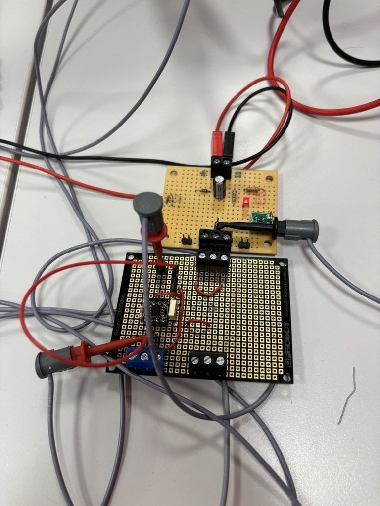
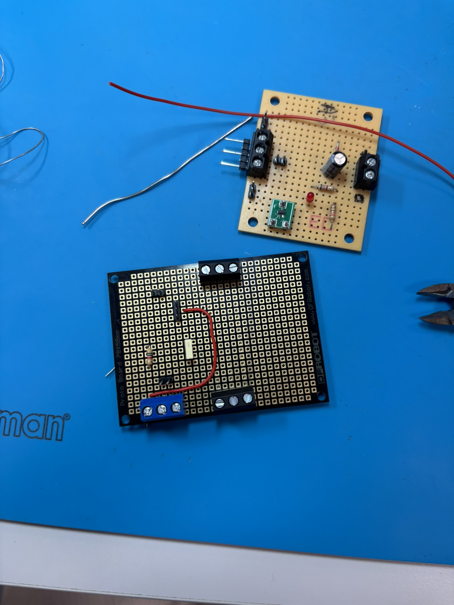

ECG (Électrocardiogramme) — Acquisition et affichage
Conception d'une chaîne complète d'acquisition ECG avec amplificateur différentiel. Objectif : amplifier et filtrer les signaux cardiaques faibles pour un affichage lisible et exploitable.
Introduction
Ce projet en équipe vise à concevoir une chaîne complète d'acquisition ECG. Le cœur du projet est la conception d'un amplificateur différentiel permettant d'amplifier les signaux cardiaques faibles (quelques millivolts) captés au niveau de la peau. Ces signaux doivent être amplifiés de façon significative tout en éliminant le bruit et les interférences pour obtenir un tracé ECG propre et lisible sur le système d'affichage.
Objectifs techniques
Amplificateur différentiel : Concevoir un étage d'amplification qui rejette le bruit commun (interférences, 50 Hz du secteur) tout en amplifiant le signal ECG différentiel. Le gain doit être adapté pour passer de quelques mV en entrée à un signal exploitable en sortie.
Filtrage : Mettre en place des filtres passe-bande pour éliminer les fréquences hors de la bande utile de l'ECG (0.05 - 100 Hz environ).
Affichage stable : Assurer un tracé ECG lisible et stable sans artefacts visuels.

Amplificateur de signal ECG
Le schéma présenté illustre l'amplificateur différentiel conçu pour le projet. Cet étage d'amplification permet de passer des signaux très faibles captés au niveau de la peau (quelques millivolts) à un signal d'amplitude suffisante pour être traité et affiché. L'utilisation d'amplificateurs opérationnels de précision garantit une amplification linéaire avec un faible bruit résiduel et un excellent taux de réjection du mode commun.
Conception de l'amplificateur
Cette image montre les étapes de conception et de réalisation de l'amplificateur différentiel. Du schéma théorique aux composants intégrés sur la carte, chaque étape a été minutieusement planifiée pour assurer une performance optimale. La conception tient compte des contraintes pratiques : encombrement réduit, stabilité thermique, immunité aux bruits externes, et facilité d'intégration dans la chaîne ECG complète.

Rôles & tâches
- Design et simulation de l'amplificateur différentiel (calcul des gains, résistances, capacités).
- Choix des composants (op-amps, résistances de précision) pour minimiser le bruit.
- Intégration des étages de filtrage analogique.
- Tests et validation : mesure du gain réel, taux de réjection du mode commun (CMRR), bruit résiduel.
- Ajustement itératif du schéma pour atteindre les spécifications.
Résultats
- Chaîne complète fonctionnelle pour un ECG lisible.
- Document technique pour faciliter le recalibrage et la maintenance.